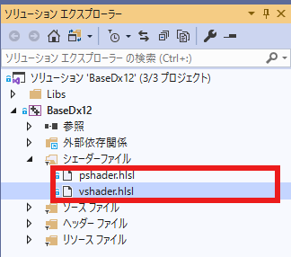
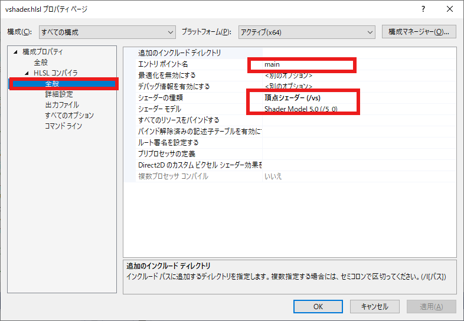
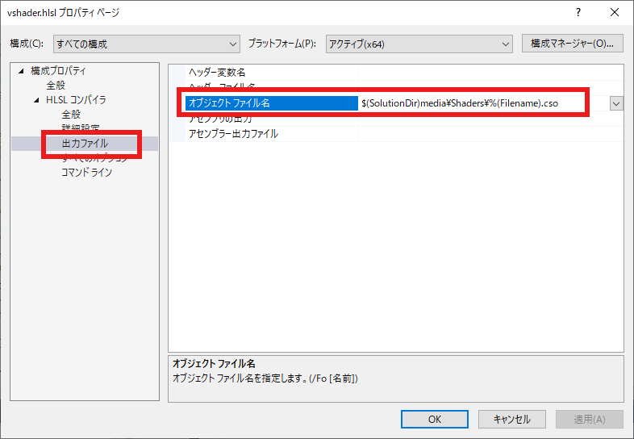
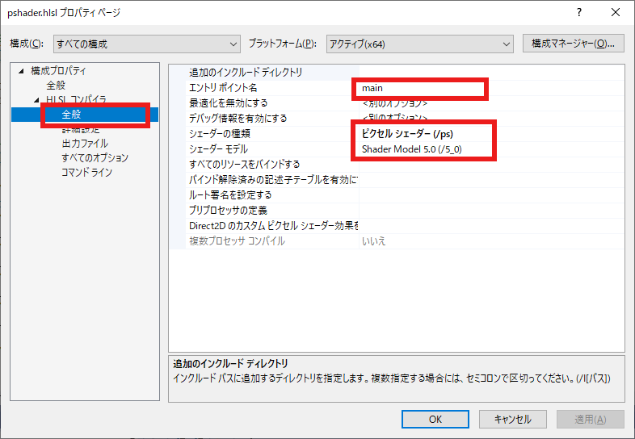
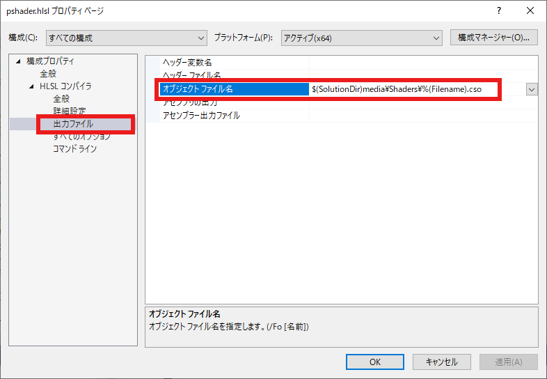

m_commandList = CommandList::CreateSimple(m_commandAllocators[m_frameIndex]);
namespace CommandList {
static inline ComPtr<ID3D12GraphicsCommandList>
CreateSimple(const ComPtr<ID3D12CommandAllocator>& allocator) {
//デバイスの取得
auto device = App::GetID3D12Device();
ComPtr<ID3D12GraphicsCommandList> ret;
ThrowIfFailed(device->CreateCommandList(
0,
D3D12_COMMAND_LIST_TYPE_DIRECT,
allocator.Get(),
nullptr,
IID_PPV_ARGS(&ret)),
L"コマンドリストの作成に失敗しました",
L"device->GetDevice()->CreateCommandList()",
L"CommandList::CreateSimple()"
);
return ret;
}
//中略
}
App::GetSceneBase().OnInitAssets();
void Scene::OnInitAssets() {
//ここでシーン上のオブジェクトを構築
//デバイスの取得
auto baseDevice = App::GetBaseDevice();
// ２Ｄの基本的なパイプライン
{
D3D12_GRAPHICS_PIPELINE_STATE_DESC PipeLineDesc;
m_pipelineState
= PipelineState::CreateDefault2D<VertexPositionColor, VSPCSprite, PSPCSprite>(
baseDevice->GetRootSignature(), PipeLineDesc
);
}
// メッシュ
{
auto aspectRatio = baseDevice->GetAspectRatio();
vector<VertexPositionColor> vertex =
{
{ Float3(0.0f, 0.25f * aspectRatio, 0.0f), Float4(1.0f, 0.0f, 0.0f, 1.0f) },
{ Float3(0.25f, -0.25f * aspectRatio, 0.0f), Float4(0.0f, 1.0f, 0.0f, 1.0f) },
{ Float3(-0.25f, -0.25f * aspectRatio, 0.0f), Float4(0.0f, 0.0f, 1.0f, 1.0f) }
};
//メッシュ作成
m_baseMesh = BaseMesh::CreateBaseMesh<VertexPositionColor>(vertex);
}
}
class Scene :public SceneBase {
ComPtr<ID3D12PipelineState> m_pipelineState;
shared_ptr<BaseMesh> m_baseMesh;
public:
Scene() :SceneBase() {}
virtual ~Scene() {}
virtual void OnInit()override;
virtual void OnInitAssets()override;
virtual void OnUpdate()override;
virtual void OnDraw()override;
virtual void OnDestroy()override;
};
auto baseDevice = App::GetBaseDevice();
// ２Ｄの基本的なパイプライン
{
D3D12_GRAPHICS_PIPELINE_STATE_DESC PipeLineDesc;
m_pipelineState
= PipelineState::CreateDefault2D<VertexPositionColor, VSPCSprite, PSPCSprite>(
baseDevice->GetRootSignature(), PipeLineDesc
);
}
namespace PipelineState {
static inline ComPtr<ID3D12PipelineState> CreateDirect(const D3D12_GRAPHICS_PIPELINE_STATE_DESC& desc) {
//デバイスの取得
auto device = App::GetID3D12Device();
ComPtr<ID3D12PipelineState> ret;
ThrowIfFailed(device->CreateGraphicsPipelineState(&desc, IID_PPV_ARGS(&ret)),
L"パイプラインステートの作成に失敗しました",
L"device->GetDevice()->CreateGraphicsPipelineState()",
L"PipelineState::CreateDirect()"
);
return ret;
}
template<typename Vertex, typename VS, typename PS>
static inline ComPtr<ID3D12PipelineState>
CreateDefault2D(
const ComPtr<ID3D12RootSignature>& rootSignature,
D3D12_GRAPHICS_PIPELINE_STATE_DESC& retDesc) {
ZeroMemory(&retDesc, sizeof(retDesc));
retDesc.InputLayout = { Vertex::GetVertexElement(), Vertex::GetNumElements() };
retDesc.pRootSignature = rootSignature.Get();
retDesc.VS = CD3DX12_SHADER_BYTECODE(
VS::GetPtr()->GetShaderComPtr()->GetBufferPointer(),
VS::GetPtr()->GetShaderComPtr()->GetBufferSize()
);
retDesc.PS = CD3DX12_SHADER_BYTECODE(
PS::GetPtr()->GetShaderComPtr()->GetBufferPointer(),
PS::GetPtr()->GetShaderComPtr()->GetBufferSize()
);
retDesc.RasterizerState = CD3DX12_RASTERIZER_DESC(D3D12_DEFAULT);
retDesc.BlendState = CD3DX12_BLEND_DESC(D3D12_DEFAULT);
retDesc.DepthStencilState.DepthEnable = FALSE;
retDesc.DepthStencilState.StencilEnable = FALSE;
retDesc.SampleMask = UINT_MAX;
retDesc.PrimitiveTopologyType = D3D12_PRIMITIVE_TOPOLOGY_TYPE_TRIANGLE;
retDesc.NumRenderTargets = 1;
retDesc.RTVFormats[0] = DXGI_FORMAT_R8G8B8A8_UNORM;
retDesc.SampleDesc.Count = 1;
return CreateDirect(retDesc);
}
//中略
}
D3D12_GRAPHICS_PIPELINE_STATE_DESC& retDesc
template<typename Vertex, typename VS, typename PS>
DECLARE_DX12SHADER(VSPCSprite)
DECLARE_DX12SHADER(PSPCSprite)
class VSPCSprite : public Dx12Shader<VSPCSprite>{
public:
VSPCSprite();
};
IMPLEMENT_DX12SHADER(VSPCSprite, App::GetShadersPath() + L"vshader.cso")
IMPLEMENT_DX12SHADER(PSPCSprite, App::GetShadersPath() + L"pshader.cso")
unique_ptr<VSPCSprite, VSPCSprite::Deleter> VSPCSprite::m_Ptr;
VSPCSprite::VSPCSprite() :
Dx12Shader(CsoFilename){}
retDesc.VS = CD3DX12_SHADER_BYTECODE(
VS::GetPtr()->GetShaderComPtr()->GetBufferPointer(),
VS::GetPtr()->GetShaderComPtr()->GetBufferSize()
);
retDesc.PS = CD3DX12_SHADER_BYTECODE(
PS::GetPtr()->GetShaderComPtr()->GetBufferPointer(),
PS::GetPtr()->GetShaderComPtr()->GetBufferSize()
);

図1107a
このなかの、例えばvshader.hlslを右クリックしプロパティを表示すると、以下の設定になっています。全般タブを開いてみましょう。

図1107b
この設定の意味するところは、エントリポイントはmainであり、シェーダーのバージョンは5.0であり、シェーダーの種類は頂点シェーダである設定になっています。
$(SolutionDir)media\Shaders\%(Filename).cso

図1107c
これはVisualStdioの設定なのですが、$(SolutionDir)というのはソリューションファイルがあるディレクトリを指し、その中のmedia\Shadersディレクトリに%(Filename).csoという名前で、コンパイルしなさい、という設定になっています。
...\BaseDx12\SimpleSample101\BaseDx12\Shaders\vshader.hlsl
...\BaseDx12\SimpleSample101\media\Shaders\vshader.cso

図1107d
となっており、出力ファイルタブは

図1107e
となっています。
IMPLEMENT_DX12SHADER(VSPCSprite, App::GetShadersPath() + L"vshader.cso")
IMPLEMENT_DX12SHADER(PSPCSprite, App::GetShadersPath() + L"pshader.cso")
struct PSInput
{
float4 position : SV_POSITION;
float4 color : COLOR;
};
PSInput main(float4 position : POSITION, float4 color : COLOR)
{
PSInput result;
result.position = position;
result.color = color;
return result;
}
...float4 position : POSITION, float4 color : COLOR
struct PSInput
{
float4 position : SV_POSITION;
float4 color : COLOR;
};
float4 main(PSInput input) : SV_TARGET
{
return input.color;
}